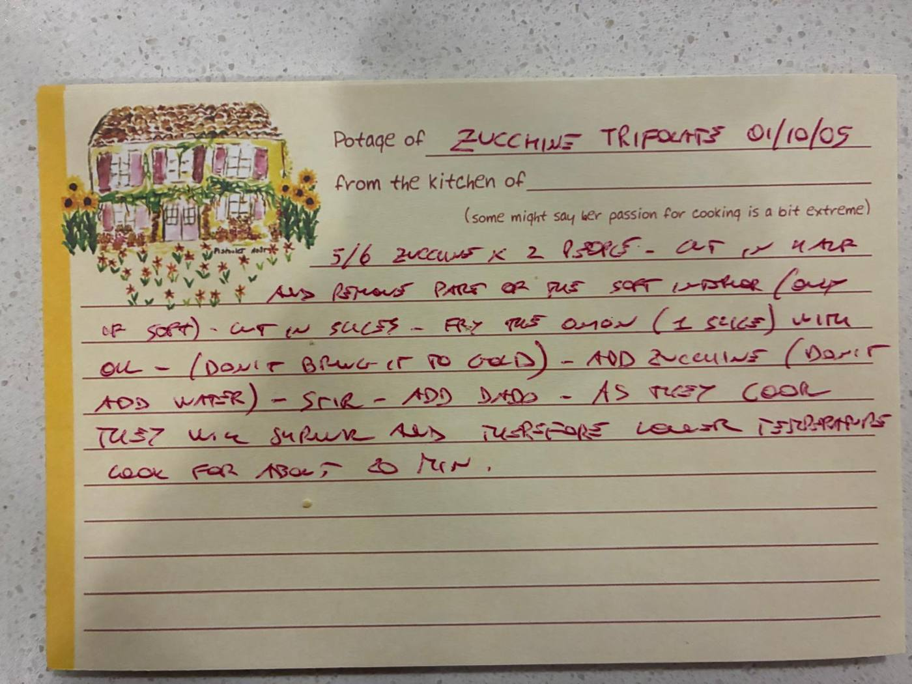

Breads & Sides
Zucchine Trifolate
Sautéed Zucchini
From the kitchen of Mom
Cookabout 20 min
Serves2

Mom's original card · tap to enlarge
Ingredients
Method tap a step to mark it done
- Cut the zucchini in half lengthwise and remove part of the soft inside (only if it's soft). Cut into slices.
- Fry the onion in oil, but don't let it turn golden.
- Add the zucchini (don't add water) and stir. Add the dado.
- As they cook they will shrink, so lower the heat. Cook for about 20 minutes.